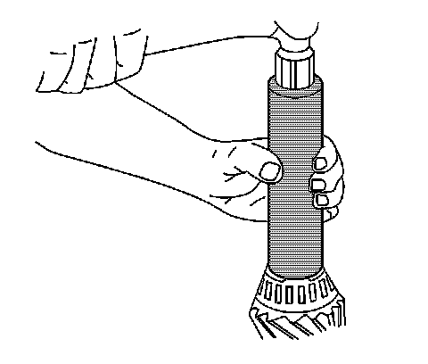
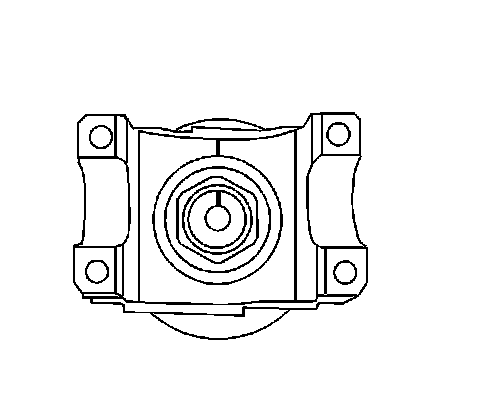

Pinion Bearing: Service and Repair
Drive Pinion Bearings Replacement
Tools Required
^ J 7818 Inner Bearing Race Installer
^ J 8092 Universal Driver Handle - 3/4 in - 10
^ J 8611-01 Rear Pinion Bearing Race Installer
^ J 8614-01 Flange and Pulley Holding Tool
^ J 22306 Pinion Cup Bearing Installer - Rear
^ J 22912-B Split Plate Bearing Puller
^ J 24433 Pinion Cone and Side Bearing Installer
^ J 36614 Inner Pinion Bearing Installer
^ J 45870 Pinion Bearing Cup Installer
Removal Procedure
1. Raise the vehicle. Refer to Lifting and Jacking the Vehicle.
2. Remove the differential assembly.
3. Remove the drive pinion from the axle.
4. Press the bearing off of the drive pinion using the J 22912-B.
5. Remove the shim.

6. Remove the outer pinion bearing cup from the axle housing using a hammer and a brass drift in the slots provided. Move the drift back and forth between one side of the cup and the other in order to work the cups out of the housing evenly.
7. Remove the inner pinion bearing cup from the axle housing using a hammer and a brass drift in the slots provided. Move the drift back and forth between one side of the cup and the other in order to work the cups out of the housing evenly.
Installation Procedure
1. Install the outer pinion bearing cup using the J 8611-01, 8.6 inch axle, or the J 7818, 9.5/9.5LD inch axle (1), and the J 8092 (2).
2. Install the inner pinion bearing cup using the J 45870, 8.6 inch axle, or the J 22306, 9.5/9.5LD inch axle (2), and the J 8092 (1).
3. Determine the selective shim thickness for the drive pinion. Refer to Pinion Depth Adjustment.
4. Install the selective shim between the inner pinion bearing and the shoulder on the gear.

5. Install the inner pinion bearing using the J 24433 or the J 36614.
Press the bearing on until the cone seats on the pinion shim.
6. Install a new collapsible spacer.
7. Lubricate the pinion bearings with axle lubricant. Use the proper fluid. Refer to Fluid and Lubricant Recommendations.
8. Install the outer pinion bearing into the axle housing.
9. Install a new pinion oil seal using the J 22388.
10. Install the pinion into the axle housing.
11. Apply sealant, GM P/N 12346004 (Canadian P/N 10953480) or equivalent, to the splines of the pinion yoke.

12. Install the pinion yoke.
Align the marks made during removal.
Notice: Refer to Pinion Flange/Yoke Installation Notice.
13. Seat the pinion yoke onto the pinion shaft by tapping it with a soft-faced hammer until a few threads show through the yoke.
14. Install the washer and a new pinion nut.
15. Install the J 8614-01 onto the pinion yoke as shown.
Notice: Refer to Fastener Notice.
Important: If the rotating torque is exceeded, the pinion will have to be removed and a new collapsible spacer installed.
16. Tighten the pinion nut while holding the J 8614-01.
Tighten the pinion nut until the pinion end play is just taken up. Rotate the pinion while tightening the nut to seat the bearings.
17. Measure the rotating torque of the pinion using an inch-pound torque wrench.
The rotating torque of the pinion should be between 1.0-2.3 N.m (10-20 lb in) for used bearings, or 1.7-3.4 N.m (15-30 lb in) for new bearings.
18. If the rotating torque measurement is below 1.0 N.m (10 lb in) for used bearings, or 1.7 N.m (15 lb in) for new bearings, continue to tighten the pinion nut.
Tighten the pinion nut, in small increments, as needed, until the torque required in order to rotate the pinion is between 1.0-2.3 N.m (10-20 lb in) for used bearings, or 1.7-3.4 N.m (15-30 lb in) for new bearings.
19. Once the specified torque is obtained, rotate the pinion several times to ensure the bearings have seated.
Recheck the rotating torque and adjust if necessary.
20. Install the differential assembly.
21. Fill the axle with lubricant. Use the proper fluid. Refer to Rear Axle Lubricant Replacement.
22. Lower the vehicle.